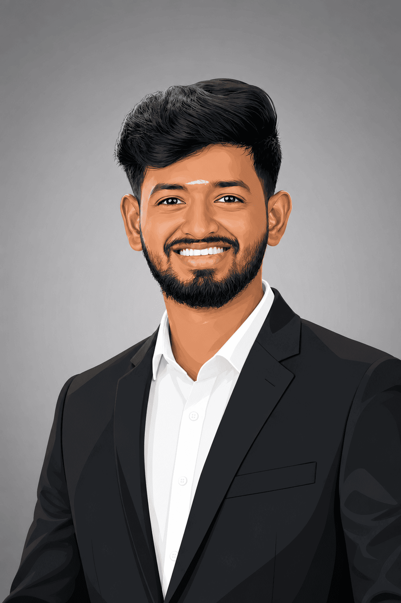

01
OPEN TO OPPORTUNITIES
Hello, I'm
Mooventiran M.
UI/UX Designer &
Front-End Developer
I turn ideas into intuitive digital experiences — from thoughtful user flows and polished interfaces to responsive, component-based front-end builds.

DESIGNER · DEVELOPER
✳ UI / UX
⌘ FRONT-END
01DESIGN
WITH PURPOSE
WITH PURPOSE
01 / ABOUT ME
Design-minded.
Developer-driven.
I’m a UI/UX Designer and Front-End Developer who enjoys making digital products feel clear, useful and effortless to navigate.
My process moves from understanding users and mapping journeys to wireframing, prototyping and responsive implementation. I work with Figma and Adobe creative tools, and bring designs to life using HTML, CSS, Bootstrap, JavaScript and React.js.
Across client projects in sports and construction, I’ve focused on visual hierarchy, reusable UI components, usability and consistent experiences across devices.
01
User-first thinking
Turning user needs into clear flows and intuitive interfaces.
02
Design consistency
Building cohesive visual systems and reusable components.
03
Design to development
Collaborating on accurate, responsive implementation.
Career focus
Growing at the intersection of product design and front-end development.
02 / TOOLKIT
Skills that shape
better experiences.
A practical blend of design craft, front-end skills and collaborative ways of working.
02
Frameworks & Libraries
03
Tools & Technologies
04
Design & Collaboration
Skill levels are intentionally not scored; the resume does not specify proficiency percentages.
03 / SELECTED WORK
Thoughtful design.
Real-world applications.
Selected client work described in my experience. Detailed case studies and live links can be added when available.
SPORTS / DIGITAL PLATFORM
FIELDONE
TRAIN. PLAY. GROW.Build your
game.EXPLORE ACADEMY ↗
game.EXPLORE ACADEMY ↗
⚽
01 / ACADEMYPLAYER DEVELOPMENT
Football Academy Platform
Focus — Create a clearer digital experience for a football academy, with intuitive navigation and stronger visual hierarchy.
Designed the platform experience with an emphasis on structured content, clear navigation and a consistent visual language.
↗ Outcome: A more intuitive academy platform concept.
CONSTRUCTION / WEB DESIGN
BUILDING THE FUTURESpaces that
move us forward.VIEW OUR PROJECTS ↗
move us forward.VIEW OUR PROJECTS ↗
Construction Company Website
Focus — Present construction services, completed projects and enquiry options in a responsive website.
Designed a website structure featuring dedicated service pages, project galleries and enquiry forms, with layouts adapted for desktop, tablet and mobile.
↗ Outcome: A responsive, brand-aligned website design.
Project descriptions are based on the responsibilities listed in the resume. No unverified performance metrics or live project links are claimed.
04 / EXPERIENCE
Where I’ve been
building my craft.
APR 2026 — JUN 2026
UI/UX Designer
JDS Software Solutions
- Designed end-to-end UI/UX for client projects, from concepts and wireframes through developer handoff.
- Created a football academy platform with clearer visual hierarchy and intuitive navigation.
- Designed a responsive construction company website with service pages, project galleries and enquiry forms.
- Collaborated with developers to support accurate implementation across desktop, tablet and mobile.
JUN 2024 — SEP 2024
UI/UX Designer Intern
Nextskill Technologies
- Created wireframes, interactive prototypes and user flows for web and mobile interfaces using Figma and Adobe XD.
- Supported user research and usability testing, refining interfaces based on user feedback.
- Maintained reusable UI components to keep designs consistent across screens.
- Worked with developers on implementation, responsive design and accessibility.
JUN 2026 — PRESENT
UI/UX & Front-End Development Trainee
SDLC Institute
- Completing structured training in UI/UX design, graphic design and front-end development.
- Practising responsive, component-based front-end implementation to strengthen design-to-development handoff.
- Training includes Photoshop, Illustrator, HTML, CSS, Bootstrap, JavaScript and React.js.
05 / EDUCATION & CREDENTIALS
Learning as a
continuous practice.
Education
Master of Computer Applications (MCA)
The Gandhigram Rural Institute
(Deemed to be University)
Bachelor of Computer Applications (BCA)
SNMV College of Arts and Science
Certifications
UI/UX Designer Certification
Lead Pro Technologies
UI/UX Designer Internship Certification
Nextskill Technologies
Languages
English • Tamil
Academic grades, awards and additional certifications were not listed in the supplied resume.
06 / GET IN TOUCH
Have a good project
in mind?
I’m open to opportunities where thoughtful design and front-end development can make a difference.
EMAIL MEmooventiran7246@gmail.com↗
CALL ME+91 85260 66672↗
LINKEDINmooventiran-m↗
GITHUBmooventiran↗
Based in Dindigul, Tamil Nadu, India
Start a conversation ↗